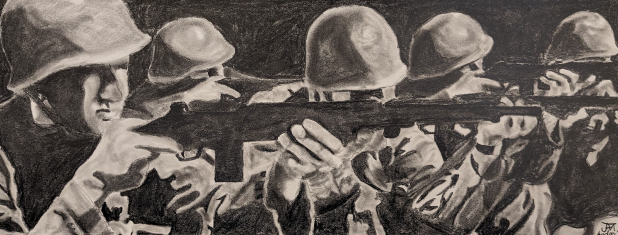
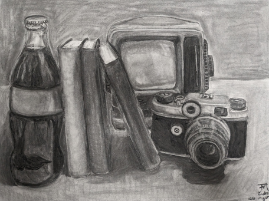
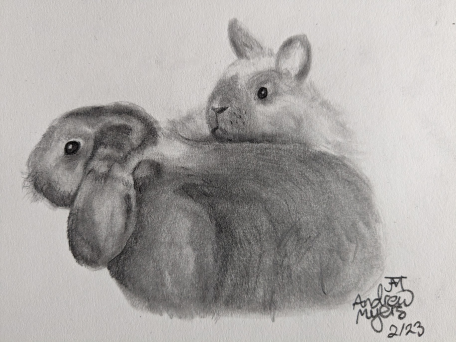

Soldiers
2023, Graphite
Made in Drawing II class. Graphite pencil drawing based on still frame from 1951 film, “The Day the Earth Stood Still”.

A Few of My Favorite Things
2022, Graphite
Still-life drawn using graphite pencil for Drawing I class. Based on photograph of treasured objects.

Clyde and Merlin
2023, Graphite
Made for a “draw anything” assignment for Drawing II. Drawn in graphite pencil based on photo of pet rabbits, Clyde and Merlin.